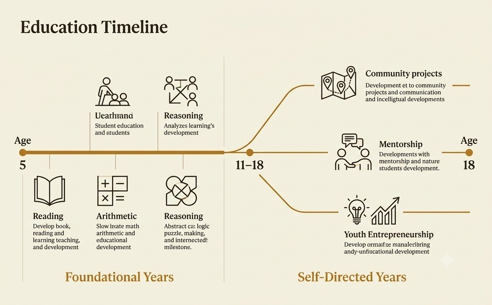
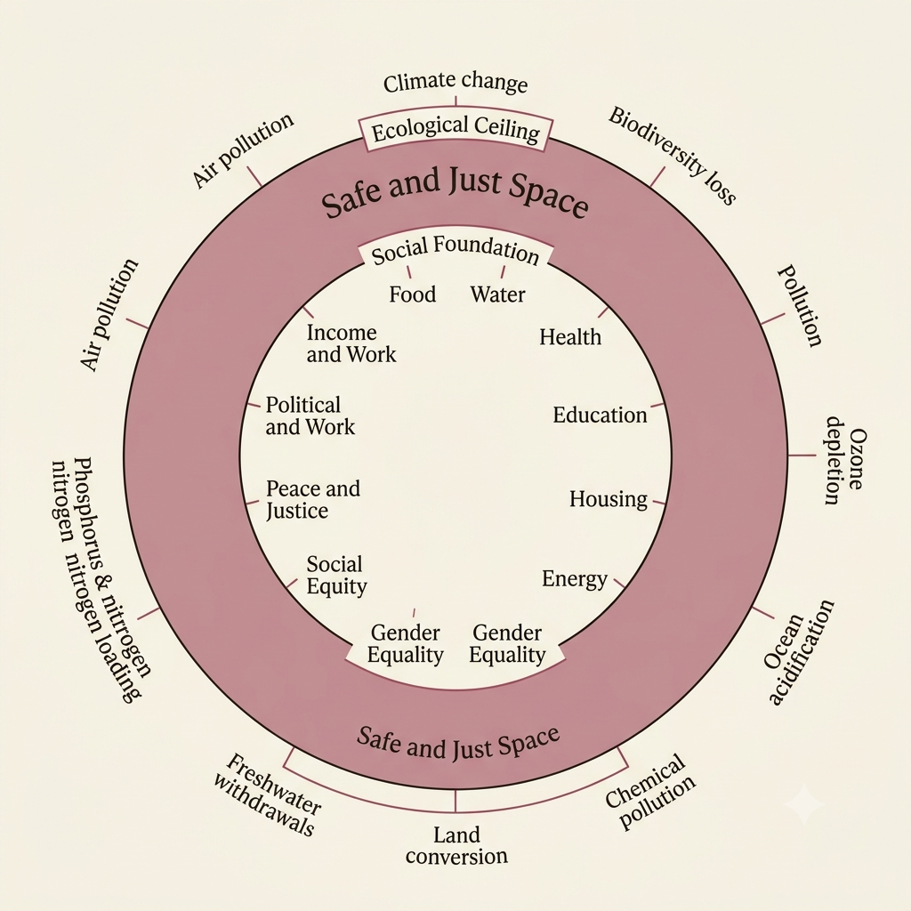

A proposal — not a research consensus
Three pillars for a world organized beyond the nation‑state.
Borders are a recent invention. The problems that now cross them — climate collapse, unaccountable power, war fought in nationalism's name — are not. This is one person's case for Law, Education, and Compassion as the three points a different world could be built on.
A note on what this is
This site makes an argument; it does not report a scholarly consensus. Where it describes documented events — a Security Council vote, a treaty, a historical constitution — those claims are sourced and checkable, and the Sources section names where to check them. Where it proposes a solution, that is opinion: mine, offered for debate rather than delivered as settled fact.
The strongest version of this argument treats the two separately. So does this page. Diagnosis is argued from evidence. The proposal is argued from values — and it should be judged, and argued with, on that basis.
Law
Who is accountable, and to whom, when the harm crosses a borderThe border is where accountability goes to die
The nation-state system was built to answer one question — who governs this land — and it answers that question reasonably well. It was never built to answer a harder one: who is accountable when a government commits harm inside its own borders, or when the body meant to adjudicate that harm is staffed by the very powers accused of it.
That gap is not hypothetical. The International Court of Justice is hearing a genocide case brought by South Africa against Israel over the conduct of the Gaza war, and the International Criminal Court has issued arrest warrants for Israeli and Hamas leaders alike1 — an unusually direct test of whether international law can reach heads of state and government at all. In 2025, a BBC-commissioned documentary on the deaths of Gaza medical workers, "Gaza: Doctors Under Attack," was pulled by the broadcaster that funded it and aired instead on Channel 4, prompting on-stage criticism at the following year's BAFTA ceremony2 — a small, concrete instance of the wider pattern: the documentation exists, and institutional caution still gets in the way of it reaching people.
Veto power, in practice
Cumulative vetoes cast by the five permanent Security Council members, 1946–present. Figures are rounded and illustrative — consult the UN's own veto record for exact current counts3.
The pattern repeats regardless of which permanent member is holding the pen: Russia has used it to shield Syria from accountability over chemical weapons; the United States has used it to block ceasefire resolutions on Gaza; China and Russia together have vetoed action on Myanmar. The vetoing power changes. The structure that lets any of them do it does not.
Two failures worth naming precisely
Srebrenica, 1995. Dutch UN peacekeepers were stationed inside a Council-declared "safe area" when Bosnian Serb forces massacred more than 8,000 Bosniak men and boys. This is not an inference — the UN's own 1999 Secretary-General's report on the fall of Srebrenica called it a failure of the organization itself, not just of the states involved4.
Iraq, 2003. The United States and United Kingdom invaded without a second Security Council resolution authorizing it, over open objections from France, Russia, China, and Germany. The Council wasn't deadlocked by a veto that time — it was simply bypassed.
"The safe area had, in effect, ceased to exist."— UN Secretary-General's report on the fall of Srebrenica, 1999
Layered sovereignty, not one government
The alternative argued here is not a single world government administering everyone from one center — that idea has its own well-documented failure mode: unaccountable concentration of power, with no outside check left once it exists. The proposal is layered sovereignty: local and religious communities keep their own law for the matters closest to daily life, while one shared layer above them handles what no single community can handle alone — cross-border security, climate response, and the basic guarantee that no group is left undefended. Three precedents, from three different traditions, already tested pieces of this.
The Constitution of Medina
A founding document of the first Muslim polity that bound Jewish tribes and Muslim clans into one mutual-defense pact while leaving each community's internal law and courts intact. Widely cited by scholars as one of history's earliest written pluralistic constitutions5 — legal autonomy underneath, shared security on top.
The Schuman Declaration
The founding text of what became the EU proposed pooling French and German coal and steel production so that war between them would become, in Robert Schuman's words, "not merely unthinkable, but materially impossible"6. Neither nation dissolved. The border simply stopped being worth fighting over.
Iqbal's Allahabad Address
Some historians read Muhammad Iqbal's proposal for a consolidated Muslim-majority northwest India as autonomy within a federated India, not a call for full partition — though this is genuinely contested; others see it as an early step toward Pakistan's separate sovereignty7. Cited here for the reading that prefigures autonomy without a hard border, not as settled history.
What replaces the standing army isn't nothing
"We don't need armies" is too flat a claim, and it dodges the real question: who protects people when the disputes get physical? The honest version of the proposal is narrower — no national militaries postured against one another, replaced by one shared security framework, in the same spirit as Medina's mutual-defense pact or the way NATO and EU integration made intra-Western-European war between member states currently unthinkable. Pooling defense is not the same as abolishing it.
The weapon isn't the faith — it's the literalism stripped of its own limits
Every major tradition has had a version of this: a core ethical teaching, hardened by absolutist readers into justification for violence the tradition's own scholars reject. In classical Islamic jurisprudence, armed jihad is bound by strict conditions — defense against aggression, proportionality, protection of non-combatants — and counter-terrorism scholarship on under-resourced madrasas in specific regions (research by scholars such as C. Christine Fair on the economics of militancy in Pakistan) documents how poverty and literalist instruction, disconnected from those classical constraints, become a recruitment pathway8. It is one instance of a wider pattern, not a claim about the religion as a whole: Hindu-nationalist (Hindutva) violence around contested sites like Ayodhya, Christian nationalism's entanglement with political violence in multiple countries, and the Buddhist-nationalist campaign against Myanmar's Rohingya all show the same mechanism — a tradition's compassionate core, hollowed out and redirected toward an in-group's dominance.
Education
What a classroom builds when it stops building nationalismFoundations first, then self-direction
The proposal here is frankly the most speculative on this page, and it's presented as a vision inspired by existing models, not as settled research. Primary school stays focused and universal: reading, arithmetic, and reasoning through roughly fifth grade. After that, the day stops being eight hours of seat time and shifts toward self-directed learning, community projects, and — for teenagers who want it — real entrepreneurship and civic work, mentored rather than assigned.
Existing models suggest pieces of this can work: the Sudbury Valley School's fully self-directed model, Finland's comparatively flexible post-primary curriculum, and decades of unschooling literature going back to John Holt. None of them removes the two objections a serious critic will raise immediately, and they're worth stating rather than hiding: self-directed models tend to work best for kids who already have supportive homes and resources, and "start a business" needs a hard, explicit line against anything resembling child labor. Community projects and mentored ventures, not unsupervised work for income, is the intended shape.

Climate arithmetic instead of nationalist civics
The clearest version of this isn't hypothetical — it's a live example. A K–5 math curriculum can teach counting, addition, and word problems through trees planted, cans recycled, and degrees of warming avoided, instead of flags and founding myths. Global citizenship, not nationalism, becomes the thing a child practices before they're old enough to be told which side of a border they were born on matters more than the planet both sides share.
Minimalism didn't need to be taught — it's already a preference
Anti-consumerism is not a hard sell to the generation that already prefers it. Declining car ownership in some urban markets, the growth of resale and thrift platforms, and the rise of "de-influencing" content pushing back against constant consumption all suggest the cultural ground for a simpler-by-choice lifestyle is already shifting under its own weight — education just needs to meet it rather than work against it.
Compassion
The shared ethical ground under the legal and economic scaffoldingWe are one is a claim every tradition already makes
Imam Feisal Abdul Rauf's writing on Islam and pluralism argues that "submission to God" — the root meaning he draws from the word muslim — describes any sincere monotheist, not one confession alone9. Read that way, the Constitution of Medina's model above stops being a specifically Islamic precedent and becomes a template: legal pluralism underneath, a shared ethical claim of unity on top — the same claim Sufi universalism, and the perennialist reading of scripture across traditions, has made for centuries.
That reading also resolves an inconsistency worth naming directly: a discriminatory tax on non-Muslims (jizya) has no place in a proposal built on this framing of the tradition. It survives here only as a historical fact about the Ottoman and earlier periods, not as a feature to revive.
"What's right with America is what's right with Islam."— Imam Feisal Abdul Rauf
The Bhakti movement dissolved caste through devotion, not decree
Medieval India's Bhakti poets and singers — Kabir and Guru Nanak foremost among them — built a devotional practice open across caste and religious lines at a time when both were treated as fixed. Historians credit the movement with real, if partial, social leveling, achieved through shared song and joy rather than legal reform10. It's the cultural register this proposal is reaching for: not a mandated belief, but a shared practice compassionate enough that the lines around it stop mattering as much.
Bounded markets, taxed by conviction older than any modern political label
The economic model proposed here keeps markets — people trading, building, and pricing goods — but bounds them on two sides. On wealth: a progressive tax reaching the top, echoing zakat's mandatory 2.5% levy on holdings above a threshold, a 1,400-year-old redistributive practice, alongside comparable ideas in Christian tithing and usury limits, and Hindu dana. On consumption: not degrowth as austerity, but Kate Raworth's "doughnut" frame — stay above a social floor and below an ecological ceiling — and Herman Daly's steady-state economics, which targets wellbeing rather than infinite material throughput11.
Presented as convergent wisdom rather than one tradition's system extended over everyone else, on purpose — consistent with the pluralism this whole proposal rests on.

Climate change is the collective-action problem borders can't survive
No malice is required for this one — just misaligned incentive. A single country that cuts emissions while its competitors don't simply sacrifices growth for a shared benefit it can't capture alone; this is the textbook tragedy of the commons, and it's why the Paris Agreement's targets remain non-binding by design. Remote work, already normalized, quietly proves borders aren't required for economic participation. Everyone loses the same glaciers and the same coastlines regardless of the passport they hold — which is the one argument here that doesn't need a historical precedent, only a horizon.
Applying it: two hard cases
Where the proposal has to do real work, not just sound rightA "one world" proposal is only as strong as its answer to the hardest existing borders. Two are addressed directly rather than avoided.
Israel – Palestine
Not a two-state partition — a single shared jurisdiction, modeled on Medina's layering: local and religious courts for personal-status law in each community, one shared security and civil framework above it, with the EU's economic-integration logic (Schuman's "materially impossible" war) applied to Jerusalem and the settlements rather than to coal and steel.
India – Pakistan – Kashmir
Free movement restored across a currently militarized line, expanding the existing, if tiny, precedent of the Kartarpur Corridor — the visa-free crossing opened in 2019 for Sikh pilgrims — into the general case, under the same shared-security logic as above rather than either state's separate military posture.
The question this doesn't fully answer yet
Removing the border line answers whose flag flies where. It does not, by itself, answer who has the final say over policing and force in a place where two populations have spent generations afraid of the other side's answer to that question. A shared federal security layer is the proposed answer — but its exact design, and who a Kashmiri or an Israeli or a Palestinian would actually trust to hold it, is the unresolved part of this proposal, named here rather than glossed over.
Sources & further reading
- South Africa v. Israel, International Court of Justice (filed Dec. 2023); International Criminal Court arrest warrant applications, Nov. 2024.
- Reporting on "Gaza: Doctors Under Attack," commissioned by the BBC and broadcast instead on Channel 4, 2025; referenced at the following BAFTA Television Awards.
- United Nations Security Council veto record — Dag Hammarskjöld Library, "Veto List." Figures above are rounded approximations; consult the official record for exact current counts.
- "Report of the Secretary-General pursuant to General Assembly resolution 53/35: The fall of Srebrenica," United Nations, 1999.
- R. B. Serjeant and other scholars on the "Constitution of Medina" (Mithaq al-Madina), c. 622 CE.
- Robert Schuman, the Schuman Declaration, 9 May 1950.
- Muhammad Iqbal, Presidential Address to the All-India Muslim League, Allahabad, 1930 — historians' interpretations of the address diverge; see comparative treatments of Iqbal and the Pakistan Movement.
- C. Christine Fair, research on militancy, madrasa economics, and radicalization in Pakistan.
- Feisal Abdul Rauf, What's Right with Islam Is What's Right with America, HarperOne, 2004.
- Historical scholarship on the Bhakti movement, including the works and legacy of Kabir and Guru Nanak.
- Kate Raworth, Doughnut Economics, 2017; Herman Daly on steady-state economics; Thomas Piketty on progressive wealth taxation; Tim Kasser on materialism and wellbeing.